This diagram is built around two surprises: an ONNX export bug that had to be diagnosed and fixed, and a final measurement that contradicts the intuitive assumption that quantization always makes things faster.

| Node | Location | What it does |
|---|---|---|
| EXPORTMODE | train_and_export.py:export_to_onnx() | The newer “dynamo” ONNX exporter (PyTorch's new default) produced a graph that broke onnxruntime.quantize_dynamic with a shape-inference error. The fix: explicitly pass dynamo=False to use the older, more conventional TorchScript-based exporter. |
| QUANTIZE | train_and_export.py:run_full_pipeline() | quantize_dynamic(..., weight_type=QUInt8) — dynamic (weights-only) quantization, the simplest ONNX Runtime mode, deliberately chosen over static quantization to avoid needing calibration data. |
| LATCHECK | train_and_export.py:evaluate_onnx() | The measurement that produced the real finding: INT8 latency was measured, not assumed — and it came out 3-4x SLOWER than fp32, reproduced across two additional clean runs to rule out a one-off fluke. |
The default dynamo-based exporter's output graph couldn't be quantized — root-caused to the exporter choice, not the quantization tool, and fixed with one explicit flag.
EXPORTMODE(dynamo=True) → DYNAMOFAIL(shape-inference error) → SWITCHFIX(dynamo=False) → LEGACYOK → QUANTIZE(succeeds)72.3% smaller file, accuracy actually held (+0.003, within noise for a 2-epoch run) — the comfortable, expected part of the result.
COMPARERESULTS → SIZECHECK(-72.3%) → ACCCHECK(+0.003, no regression)Measured three separate times: INT8 consistently 3-4x slower than fp32 on this CPU, because dynamic quantization's runtime dequantization overhead exceeds the compute savings for a model this small.
LATCHECK(int8 < fp32? expected Yes) → ACTUALSLOW(measured No — INT8 slower) → reported honestly, not hiddenonnxruntime.quantize_dynamic with a shape-inference error, fixed by explicitly passing dynamo=False to use the older TorchScript-based exporter instead.quantize_dynamic(..., weight_type=QUInt8), achieving a measured 72.3% file-size reduction with accuracy held within noise (+0.003) for a 2-epoch training run.Dynamic quantization stores weights in INT8 (the size win) but computes activations in floating point at runtime, requiring the weights to be dequantized back to floating point on every forward pass before the actual matmul — that dequantization is pure runtime overhead with no corresponding speedup, since the underlying compute still happens in fp32. For a large model where memory bandwidth (moving weights from memory to compute) dominates total cost, the smaller INT8 weights reduce memory traffic enough to offset the dequantization overhead and net a speedup. For a model this small, memory bandwidth was never the bottleneck to begin with, so the dequantization overhead is pure added cost with no offsetting benefit — which is exactly the mechanism behind the measured 3-4x slowdown, and why the finding is specific to model size, not quantization in general.
I'd never ship a quantization decision without measuring the actual latency on the target inference hardware and target model size, precisely because this project's own finding falsifies the naive assumption — 'smaller' (file size, memory footprint) and 'faster' (inference latency) are related but not the same claim, and can diverge, especially for smaller models or models where memory bandwidth isn't the bottleneck. I'd measure both static and dynamic quantization against the un-quantized baseline on real target hardware, weigh the actual measured latency delta against the actual deployment need (is file size / memory footprint the real constraint, e.g. edge deployment, or is latency the real constraint, e.g. a hot serving path) — and only ship quantization where the measured trade-off matches what the deployment actually needs, not by default.
The dynamo-based exporter produces a structurally different ONNX graph representation than the legacy TorchScript-based exporter — a graph that's valid enough to load and run inference on directly, but whose shape/type metadata wasn't fully compatible with what onnxruntime.quantize_dynamic's internal shape-inference pass expected when analyzing the graph to decide which operators to quantize. This is a case where 'the model works' and 'the model is compatible with this specific downstream tool' are different bars — the export succeeding and producing correct inference doesn't guarantee every downstream tool in the ecosystem has caught up with a newer exporter's graph representation, which is precisely the kind of tooling-maturity gap you hit when adopting a 'new default' before the surrounding ecosystem has fully adapted to it.
I'd pin the exact PyTorch and ONNX Runtime versions this fix is verified against in the project's dependency lock file (rather than an open-ended version range), and add this exact export-then-quantize step as an explicit CI check that fails loudly the moment either a PyTorch upgrade breaks the legacy exporter path or a future PyTorch/ONNX Runtime combination resolves the dynamo-path incompatibility (at which point I'd want to know, so I could migrate off the deprecated path deliberately rather than being forced off it by a build breakage) — the goal is converting an eventual silent breakage into an explicit, actionable CI signal at the moment the ecosystem shifts, not preventing the shift itself.
A single point-estimate difference this small, from a 2-epoch training run on presumably a modest evaluation set, isn't enough on its own to distinguish 'quantization has a small regularizing effect' from 'this particular evaluation run's randomness (data ordering, any remaining stochasticity in inference) happened to land slightly higher' — you'd need to establish a noise band by running the same evaluation multiple times (or bootstrapping the eval set) to see the natural variance in the accuracy metric itself, then check whether +0.003 falls inside or outside that band, the same statistical rigor project 07's harness applies to A/B results. Absent that measurement, the honest claim is 'accuracy did not measurably regress', not 'accuracy improved' — the project's own framing ('within noise') is appropriately conservative given what was actually measured.